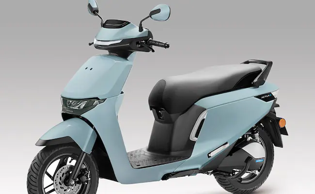

 Honda Motorcycle & Scooter India has introduced its first electric scooters in the Indian market: the Activa e and QC1. These new electric models mark the brand’s 12th and 13th electric vehicles globally. Read on to learn more about their features, range, and launch details.
The Honda Activa e is a completely new model, carrying forward the name of the iconic Activa scooter but with an electric twist. The Activa e comes with a swappable battery setup housing two 1.5 kWh batteries, offering a range of up to 102 km on a single charge. Powered by a wheel-side electric motor with an output of 4.2 kW (5.6 bhp), the scooter is also equipped with three riding modes: Standard, Sport, and Econ.
Honda’s QC1 electric scooter is designed for short-distance travel, making it an ideal option for city commutes. It comes with a fixed 1.5 kWh battery pack and offers a range of 80 km. The scooter also features a compact in-wheel motor with a power output of 1.2 kW (1.6 bhp) and 1.8 kW (2.4 bhp). The QC1 will be launched exclusively for the Indian market in the spring of 2025.
Honda aims to achieve carbon neutrality by 2050 and plans to electrify its motorcycles in the coming years. The launch of the Activa e and QC1 marks the beginning of this transition in India. These models reflect Honda's commitment to contributing to a cleaner, more sustainable future.
The introduction of the Activa e and QC1 is a significant step in Honda's journey towards electric mobility. These models cater to different segments of the market, from daily commuters to eco-conscious riders looking for short-distance travel options. The Activa e is expected to revolutionize the EV market in India with its performance and range.
Want to learn more about Honda's electric scooters? Stay updated by visiting our website for the latest news on EVs.
Explore More